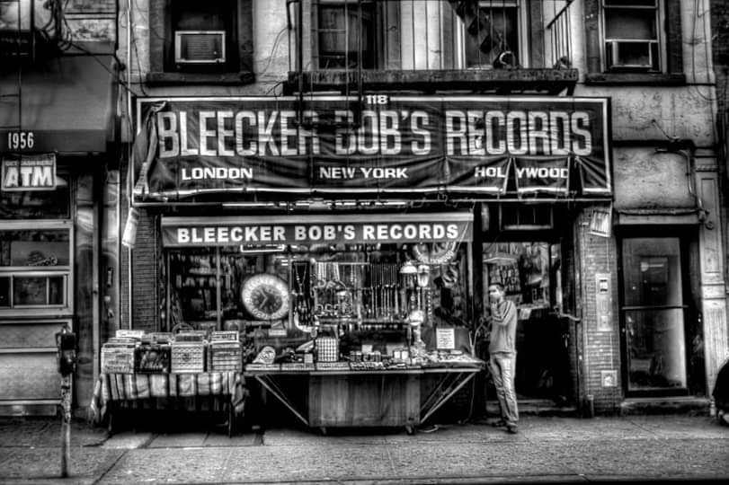
Bleecker Bob’s
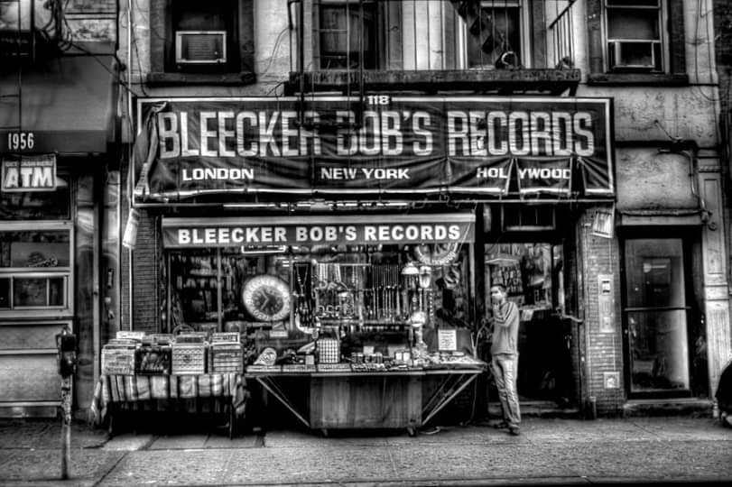
Bleecker Bob’s
Here’s what I’ve got so far…
Thanks!
I thought I had more, but I do have these:
http://nycnostalgia.tumblr.com/post/65515012196/abandoned-91st-street-station-1995
http://nycnostalgia.tumblr.com/post/48939041421/abandoned-91st-street-station-spooky
Thanks! I don’t have anything right now, but I’m always on the lookout for Upper West Side pics…

Rockettes and friends outside of Radio City, 1986
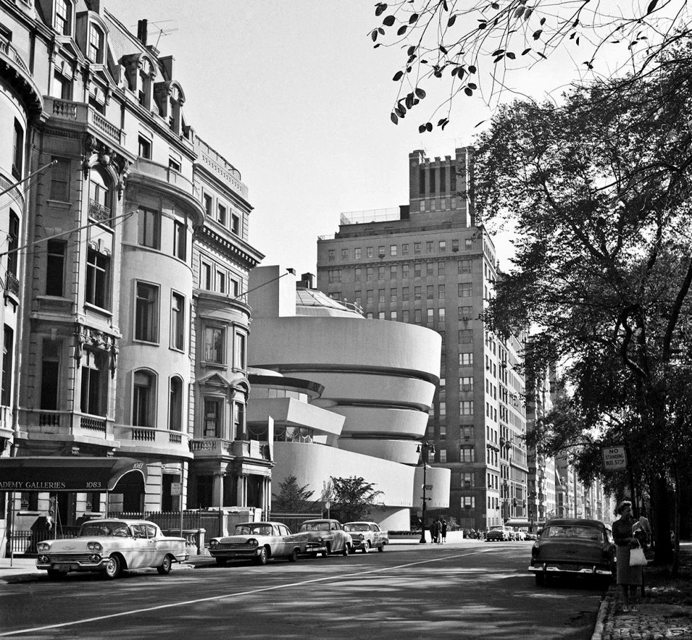
Solomon R. Guggenheim Museum, Unknown Photographer, early 1960s

Paul Simon outside the NYPL

James Brown on Broadway
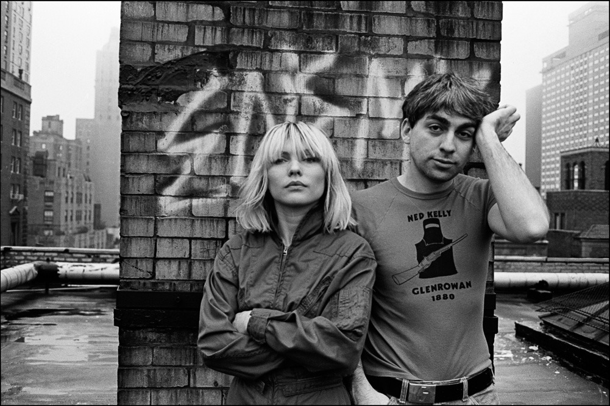
40% of Blondie, 1980
Kim Gordon from Sonic Youth, 1970s
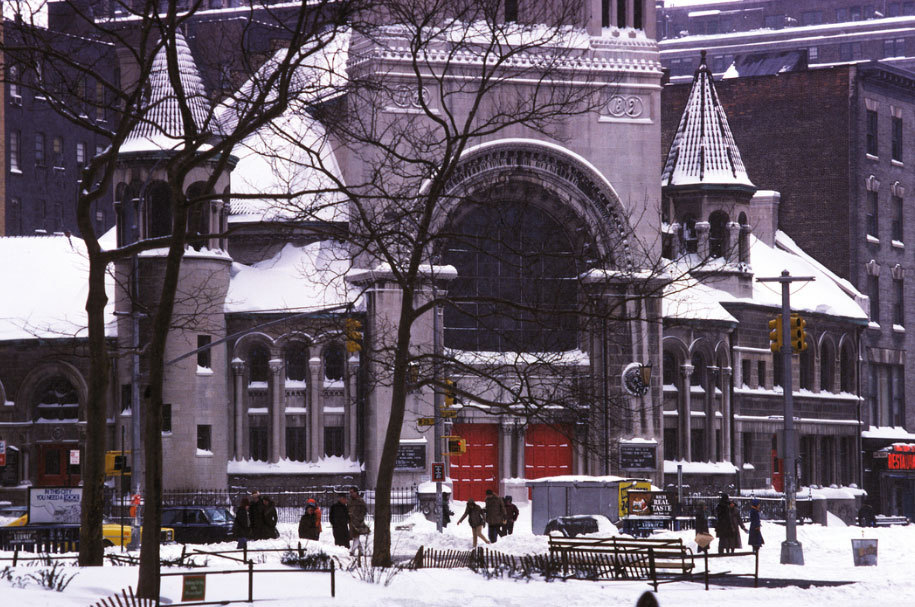
79th and Broadway
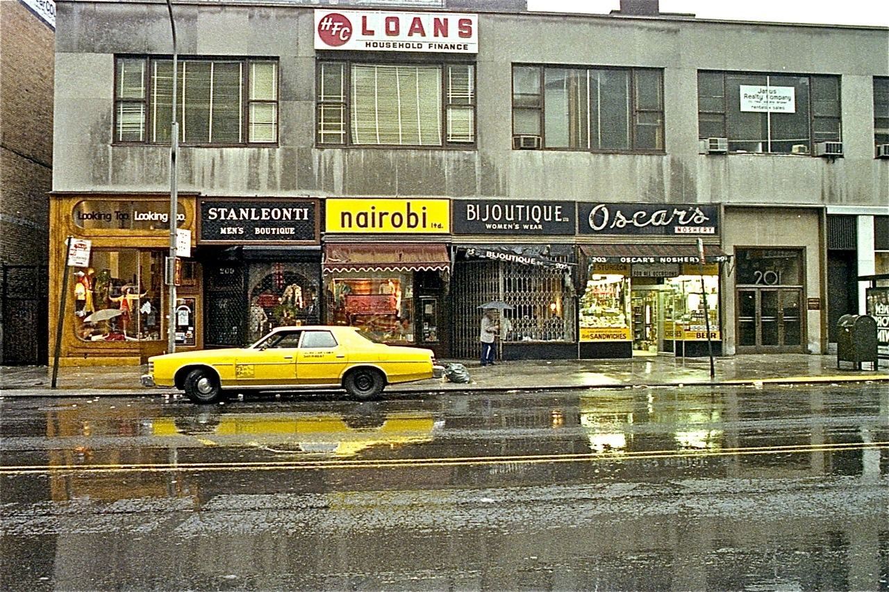
West 72nd Street, 1980s

There’s a time for working, and a time for napping.
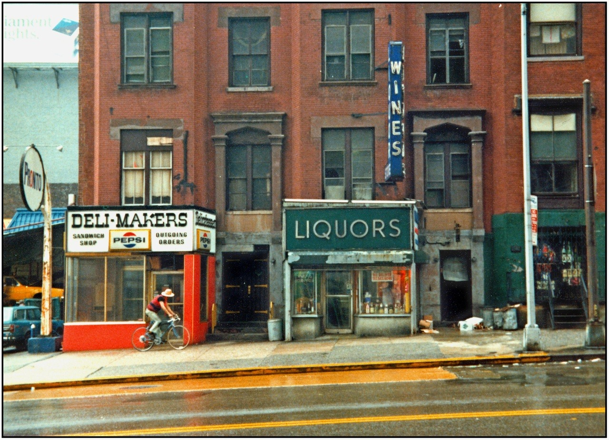
W. 34th Street, 1979

Cops on the street

433 W 34th Street between Dyer Ave. and 10th Ave

Louis Faurer Chelsea Hotel, New York City 1971
Places to go, people to meet…

NYC, ‘84, RA Clayton

St. Mark’s Place, 1980s

8th Street and 6th Avenue, looking south

Lower East Side, 1977

Houston and 2nd Ave, 1980

Orchard Street selfie
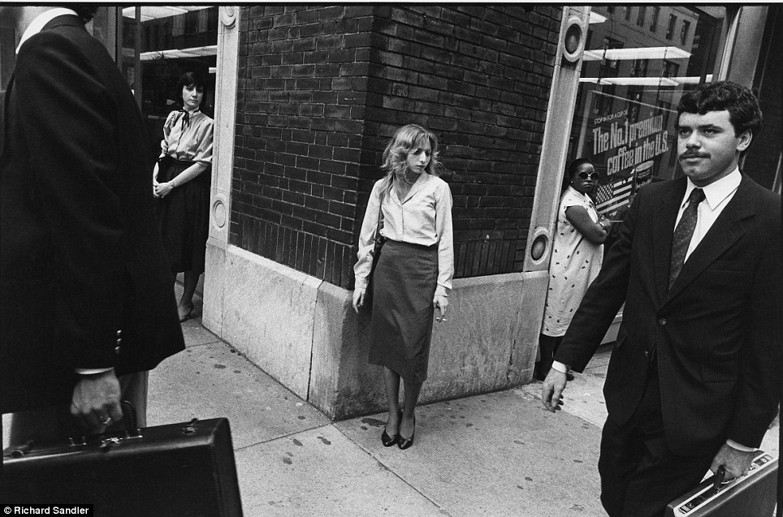
Smoke break on Madison Ave, 1982

1980 shorts
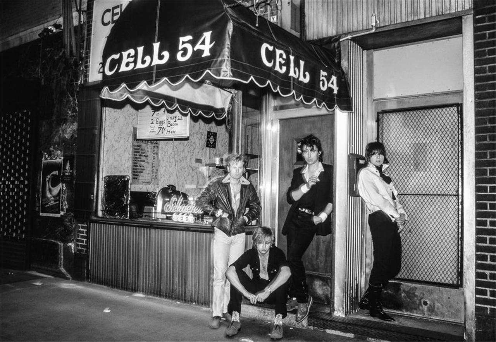
The Pretenders in 1980

Stand clear of the closing doors.
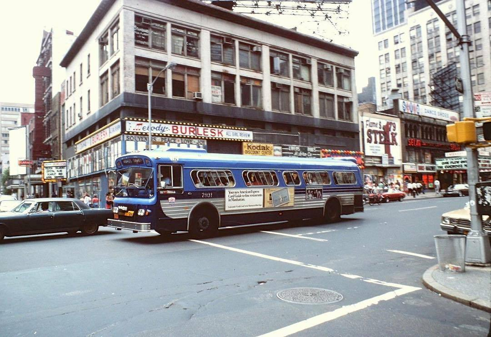
Broadway and 48th, 1975

The haves en route to Zabar’s. The have nots en route to nowhere.
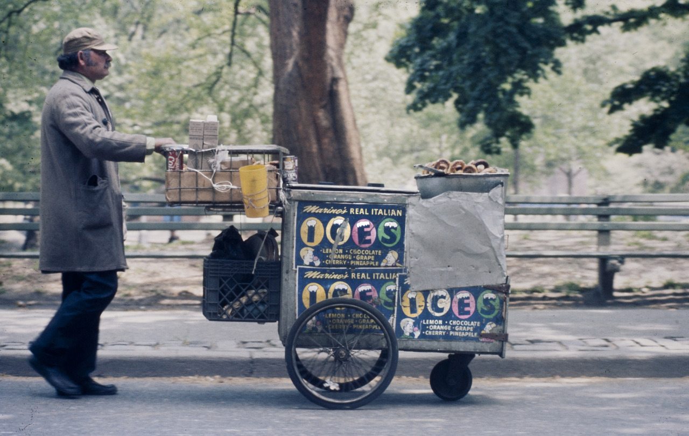
Ices in Central Park, 1970

Broadway and 93rd, 1972

84th and Broadway, looking southeast 1977

Lisa Kahane, Gardening (Bronx, NY), 1983.
Not any of the places I’ve revisited – Upper West Side, Washington Heights, the Village, Chelsea, Times Square, Hell’s Kitchen,…
Maybe parts of the Upper East Side is still sort of the same, because it was wealthy and still is.
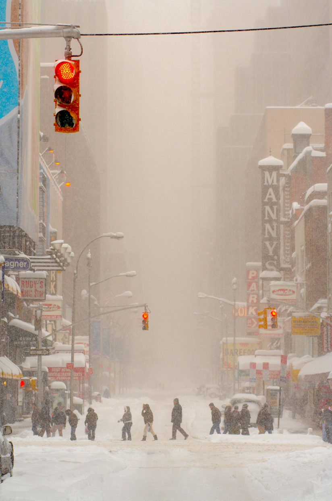
Blizzard, NYC by Tomas A. Originally posted by e4rthy
48th Street
King of New York, NYC, Anthony Burgess, 1970s
King of the Hill
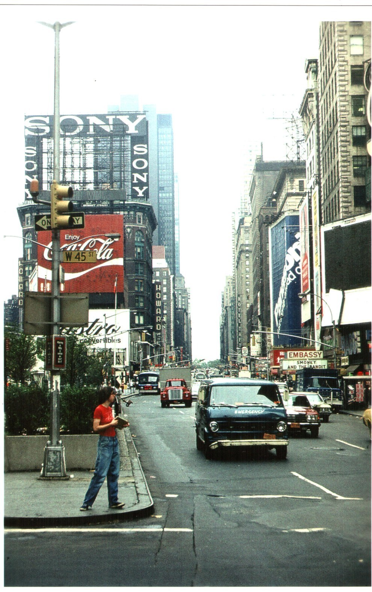
Broadway at 45th Street, looking north, ca. 1977
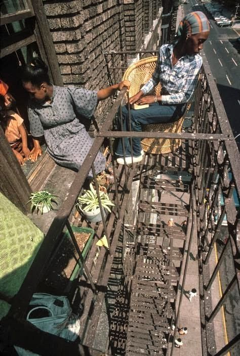
Sitting on the fire escape on 5th Avenue. Harlem, 1978
[photo credit unknown]
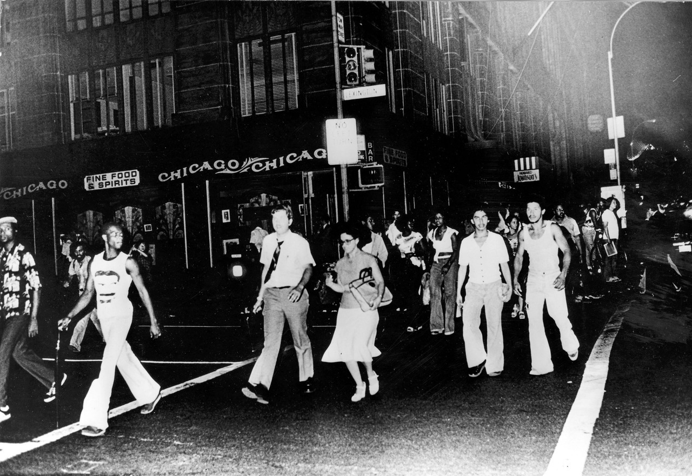
Scene from the 1977 blackout
{kind=link}